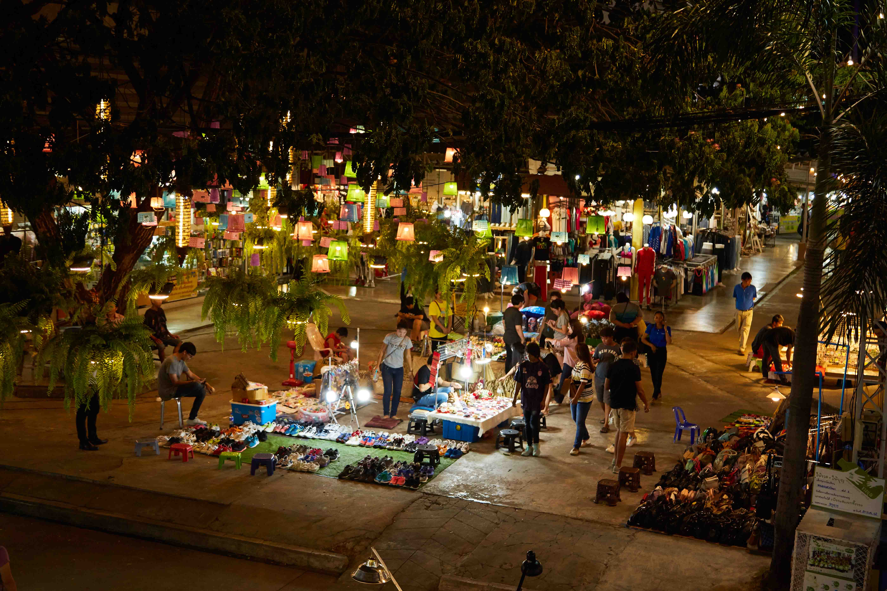

สถานที่ท่องเที่ยว

บึงแก่นนคร
สถานที่พักผ่อนยอดนิยมใจกลางเมือง

พระมหาธาตุแก่นนคร
แลนด์มาร์กสำคัญของจังหวัด ชมวิว 360 องศา

อุทยานแห่งชาติภูเวียง
แหล่งค้นพบไดโนเสาร์แห่งแรกของไทย

ภูผาม่าน
ชมค้างคาวออกจากถ้ำและธรรมชาติสวยงาม

เขื่อนอุบลรัตน์
จุดชมวิวอ่างเก็บน้ำขนาดใหญ่

ตลาดต้นตาล
ตลาดกลางคืนยอดนิยม อาหารและดนตรีสด